Claude Code 工程化指南：CLAUDE.md、Skills、Subagents、MCP、Hooks、Plugins 一篇讲透
大家好，我是小林。
用 Claude Code 的人现在是真的多，但我发现一个挺普遍的现象。
大部分人的用法，还停留在「打开终端，敲需求，等它干完」。每次开新会话，都要把项目背景重新交代一遍，我们用什么框架、构建命令是什么、哪些文件不能动。交代完了它干得挺好，可一关掉，下次又是从零开始。
说人话就是，你雇了个能力很强的员工，但他每天下班就失忆，第二天来了你得重新培训一遍。
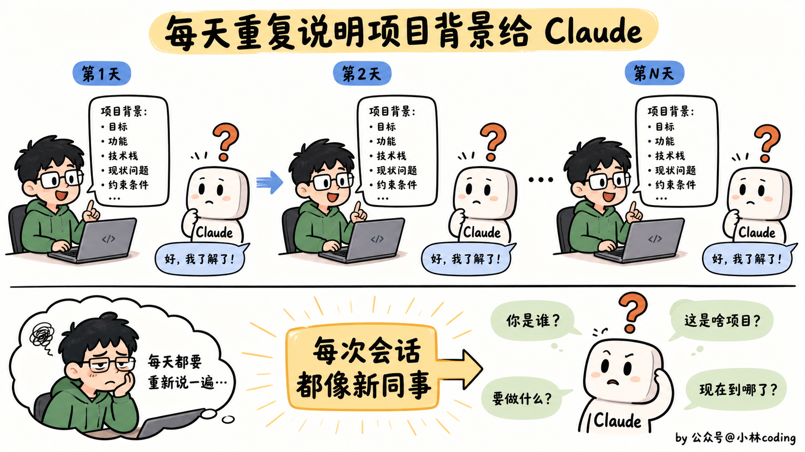
Claude Code 提供了多种可组合的工程化机制，常见包括 CLAUDE.md、Skills、Subagents、MCP、Hooks、Plugins；具体名称、目录和可用能力会随版本与配置变化。
所以这篇就来聊聊 Claude Code 工程化这个问题。
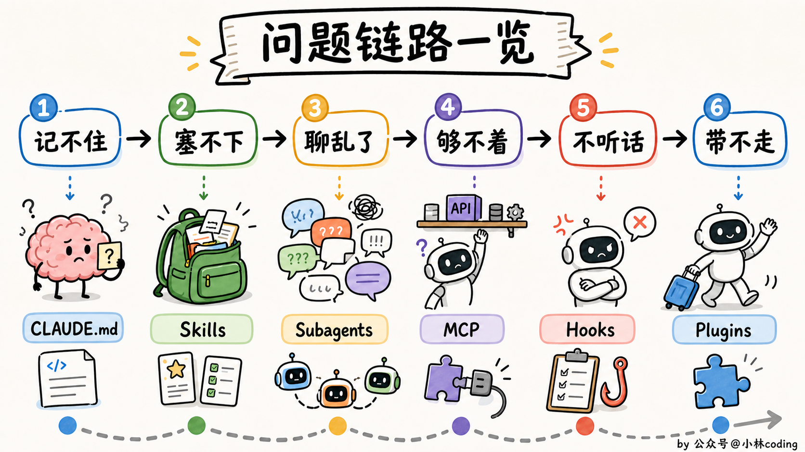
文章有点长，建议先收藏再看。
01｜Claude 怎么才能记住你的项目？
每次新会话都要重新交代一遍？
先从最扎心的问题开始。
你接手了一个后端项目，用 Claude Code 干活。第一天你跟它说，项目还停在 JDK 8，构建用 mvn 走 package，core 模块是祖传代码别动。它记住了，干得漂亮。
第二天开个新会话，让它加个接口。它上来就写 Stream.toList() 和 record，编译直接爆红，顺手还把 core 模块「重构」了一把。
你血压上来了。但冷静想想，这不怪它。
模型不会自动把每次会话的全部内容永久写入参数。会话历史、项目文件、配置文件和产品提供的记忆机制可以分别承担短期上下文与跨会话状态，具体行为取决于 Claude Code 版本、设置和用户是否保存内容。
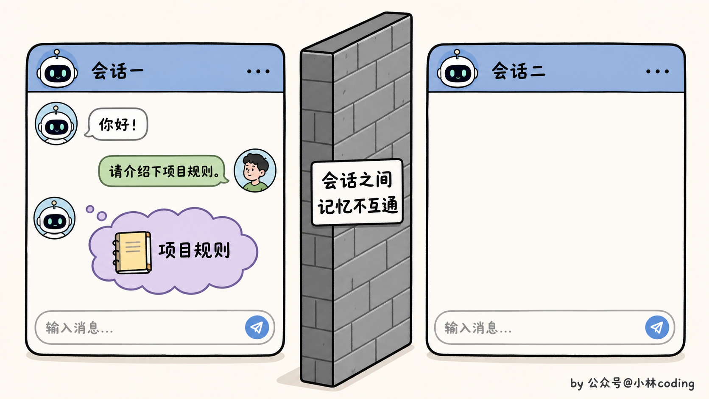
那怎么办？Claude Code 给的答案简单到有点朴素，写个文件。
在项目中放置 CLAUDE.md，Claude Code 会按当前产品的目录发现与加载规则读取其中的项目指令；加载位置、继承关系和注入时机应以当前版本文档为准。它是模型可见的指导文本，不是强制执行的安全边界。
说白了就是给新员工的入职手册。人还没开始干活，规矩先看一遍。你不用每天重新培训，因为培训材料就钉在工位上。
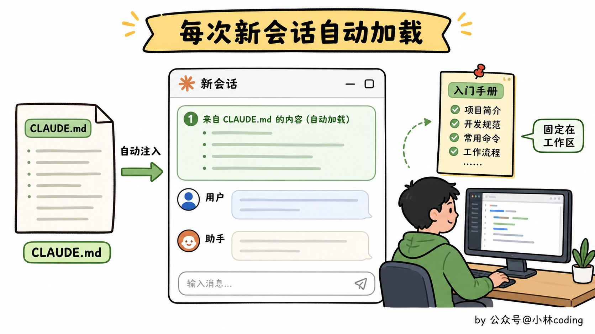
CLAUDE.md 放哪、怎么被加载？
CLAUDE.md 不止能放一个地方。
放在 ~/.claude/CLAUDE.md 的通常用于用户级指令；是否对所有项目生效、如何与项目级指令合并，要以当前版本的加载规则和设置为准。适合写个人偏好，比如「回答用中文」「commit 信息别写太长」。
放在项目根目录的通常用于项目级指令，写这个项目的技术栈、命令和规范。
还可以放在子目录里。子目录指令是否按需发现、何时加载以及与父级指令的优先级，取决于工作目录、文件访问路径和产品版本；大项目里可用它表达模块级规范，但必须实测避免冲突。
三个层级摆在一起看，就是这么个结构。
~/.claude/
└── CLAUDE.md # 全局级指令（实际加载范围以版本/设置为准）
my-project/
├── CLAUDE.md # 项目级，启动就加载
├── web/
│ └── CLAUDE.md # 动到 web 模块的文件才加载
└── core/
└── CLAUDE.md # 动到 core 模块才加载
还拿前面那个 Java 项目说。个人偏好写在全局那份里，走到哪个项目都带着。JDK 版本、构建命令这种项目级规矩写在根目录。web 模块有自己的接口规范，core 模块有一堆「别动」的禁令，各写各的，Claude 干到哪个模块，哪份规矩才进场。
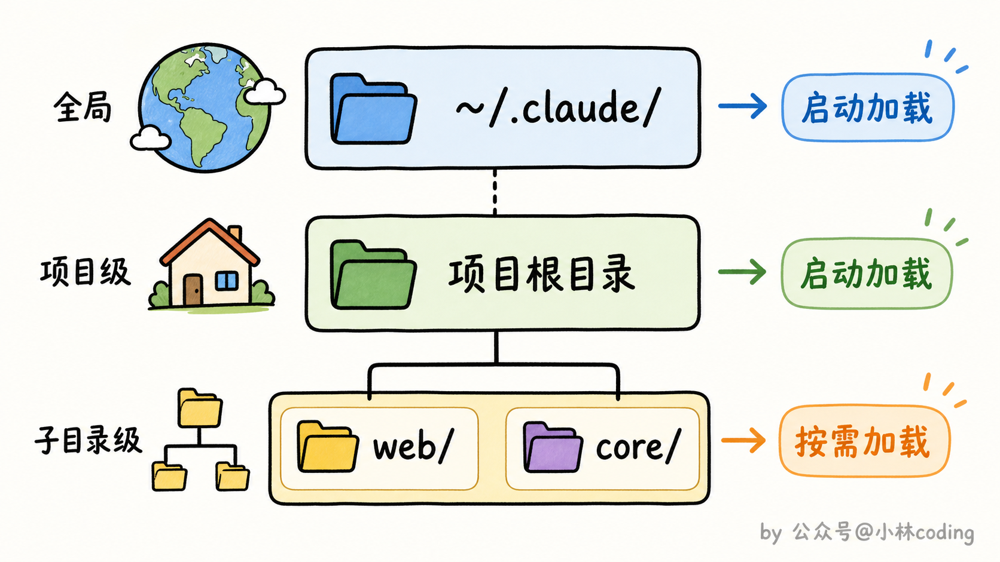
除了手写的 CLAUDE.md，部分 Claude Code 版本还提供自动记忆能力，可把用户反馈、项目事实或工作习惯保存到本地记忆文件并在后续会话中选择性召回。它不是参数更新，也不是事实保证；应审查写入内容、敏感信息、过期状态和删除策略。
你写规矩，它记经验，两边凑一块才算全。
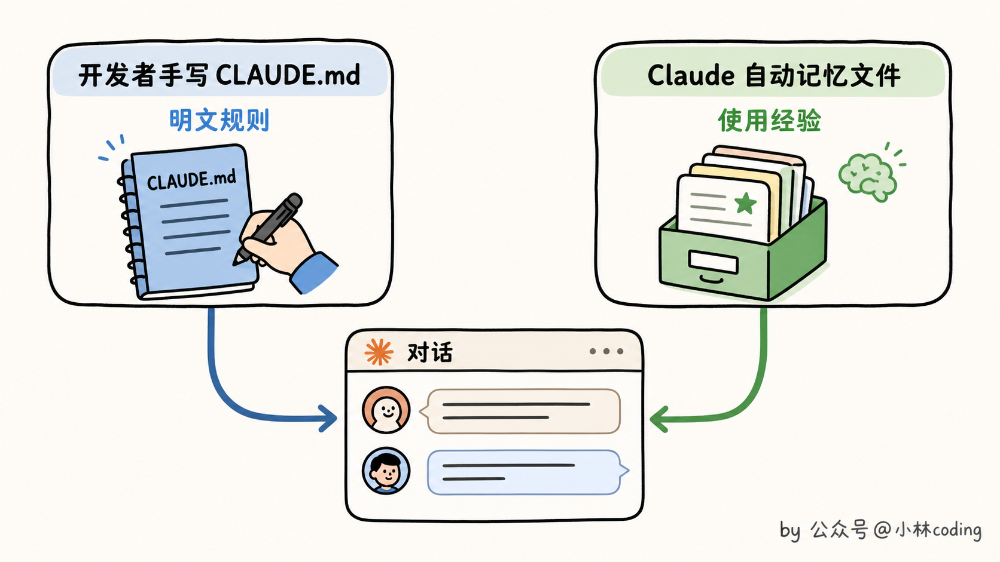
一份像样的 CLAUDE.md 长什么样？
光说不练没感觉，下面用一个项目里的 CLAUDE.md 抽几段出来说明。
# 项目说明
Spring Boot 服务，JDK 8，禁止用高版本语法。
## 常用命令
- 单测：mvn test -pl web
- 打包：mvn clean package -DskipTests
## 铁律
- core 模块是待下线的祖传代码，只读，不许改
- 表结构变更必须走 Flyway，不许手写 ALTER TABLE
没什么花头，就是大白话写规则。但有几个讲究。
命令要写全，别写「跑一下测试」，要写 mvn test -pl web 这种能直接复制执行的。禁令要写死，「尽量不要改」这种软话没用，就写「不许改」。
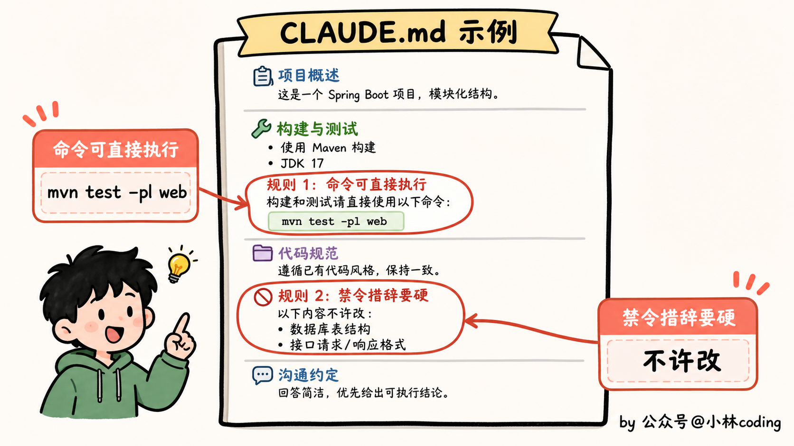
那么问题来了，什么才配写进 CLAUDE.md？我的标准就一条：高频、稳定、与当前项目相关的指令才常驻。
把整个架构文档、接口文档全贴进 CLAUDE.md，会增加每次任务的输入成本并稀释高优先级规则；是否全量加载取决于版本与层级，但常驻文件都应保持短小、可验证。
CLAUDE.md 是入职手册，不是公司图书馆。
但这样一来，新的问题就冒出来了。
那些不是每次都用、但用的时候很重要的东西，往哪放？比如一整套 code review 的检查清单、发布流程或回滚步骤。它们可以放到 Skill、参考文件或显式任务提示中，再在使用时加载；是否自动发现由产品版本和配置决定。
这就轮到六件套里的第二样登场了。
02｜不常用的知识该往哪放？
为什么不能全塞进 CLAUDE.md ？
先算一笔账。
Claude 的上下文窗口和请求预算是有限的，可以把它理解为当前任务的工作记忆。常驻指令、工具结果和文件内容都会争用预算，但具体加载、缓存和压缩方式由产品实现决定。
你写了三千字的 code review 清单进去，结果今天的任务是改个文案错别字。这三千字照样加载，照样占地方，照样分散它的注意力。
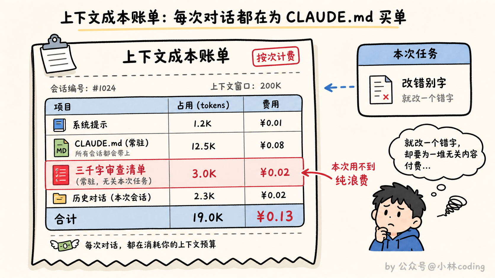
说实话，这就跟你入职第一天，主管把公司所有部门的操作手册全打印出来让你背一样。你要的是「用到的时候知道去哪查」，而不是全背下来。
Claude Code 给这个问题的答案叫 Skill。
一个 Skill 长什么样？
Skill 的设计，我第一次看懂的时候真有点想拍大腿。核心就一个点，拆两层加载。
在 Claude Code 的当前 Skill 机制中，常见形式是包含 SKILL.md 的目录，文件可用 frontmatter 提供名称和描述；格式、发现路径和可选字段属于产品/版本约定，不应当当作所有 Agent 的通用标准。
Skill 通常支持渐进式披露：先让模型看到较短的描述，再在任务相关时读取正文或引用资源；实际加载粒度、触发条件和 token 成本可能因版本、调用方式和 Skill 内容而不同。
启动时 Claude 眼里的 Skill 库，其实就是一张这样的单子。
code-review 审查代码改动时用，带团队检查清单
deploy-check 上线发布前用，带发布步骤和回滚预案
db-migrate 改表结构时用，带 Flyway 操作规范
下面的清单只用于说明“描述与正文分离”的思路，不代表所有 Skill 在启动时都只占固定字数。
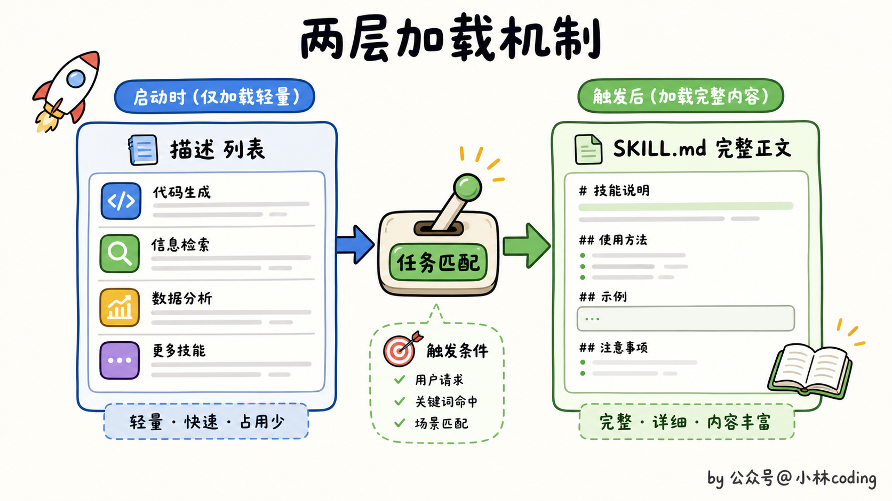
CLAUDE.md 更适合常驻指令；Skill 可以把专项流程拆成可发现、按需加载的资源，但具体是否预加载描述、何时触发和加载哪些引用由产品实现决定。
描述越短，常驻成本通常越低；但 Skill 数量、描述长度、引用资源和触发后的正文都会影响上下文与工具调用成本。附带的参考文档和脚本还会引入供应链与执行风险。
很多同学估计就问了，装了这么多 Skill，Claude 怎么知道什么时候用哪个？
在支持自动发现的版本中，任务描述可能触发相关 Skill；也可以显式调用斜杠命令或按产品支持的方式指定。自动匹配不是可靠授权，应在高风险流程中显式确认资源、工具和权限。
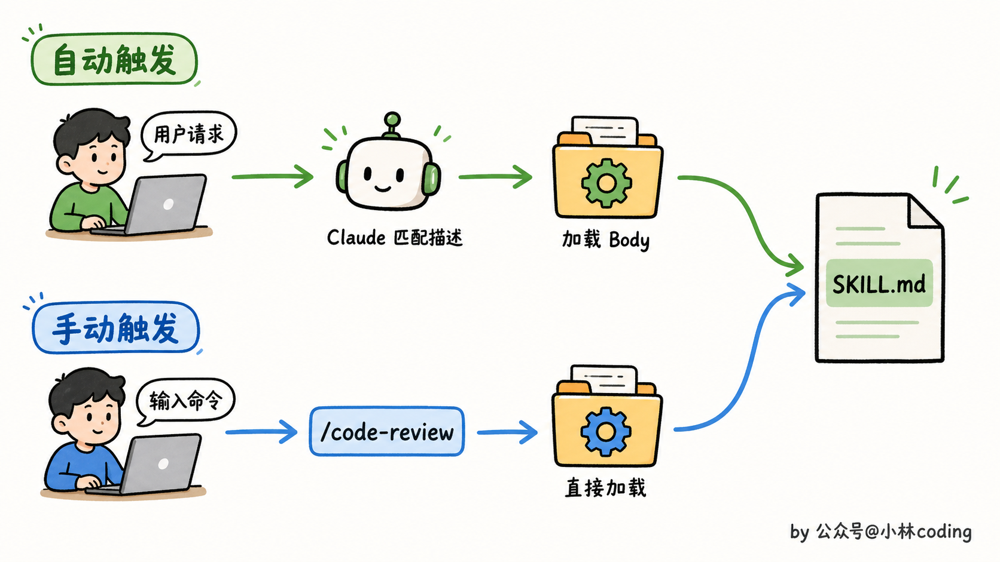
举个例子，把 code review 清单做成 Skill
我把一套 review 流程做成了 Skill，放在项目的 .claude/skills/code-review/ 目录下，SKILL.md 大概长这样。
---
name: code-review
description: 审查代码改动时使用，包含团队的检查清单和输出格式
---
审查改动时按以下重点检查：
1. 有没有绕过 service 层直接查库
2. 新接口有没有做参数校验
3. 错误处理是吞掉了还是往上抛了
审查结果按「问题、位置、建议」三栏输出。
frontmatter 里那句 description 是整个 Skill 的门面，Claude 全靠它判断这个 Skill 什么时候该被唤起，所以要写清楚「什么时候用」。
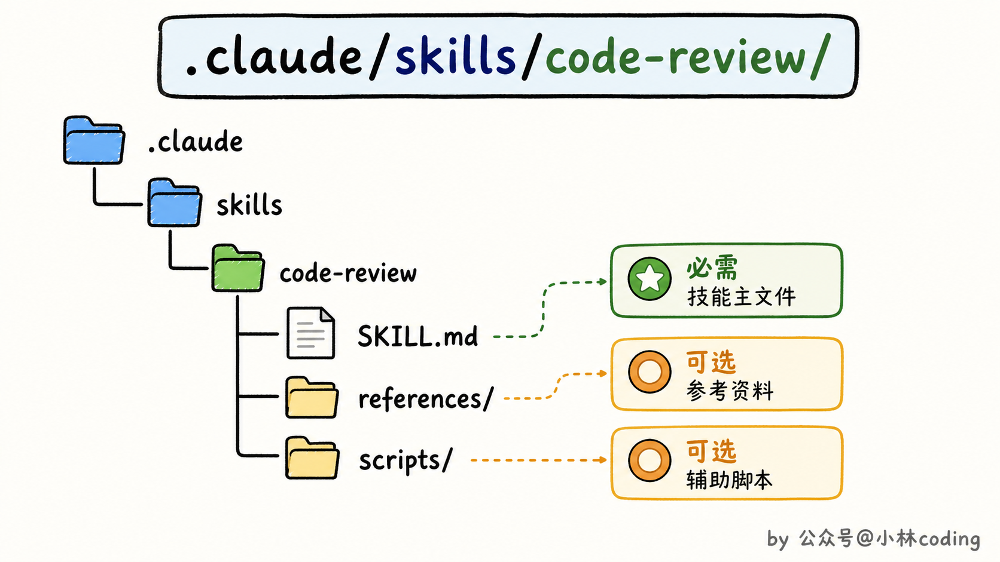
装上之后可以把专项规范与常驻指令分开；当 Skill 被发现并加载时，模型会按其文本尝试执行，但仍需要测试触发率、输出格式、权限和失败回退，不能保证“完全不占上下文”或每次都按清单执行。
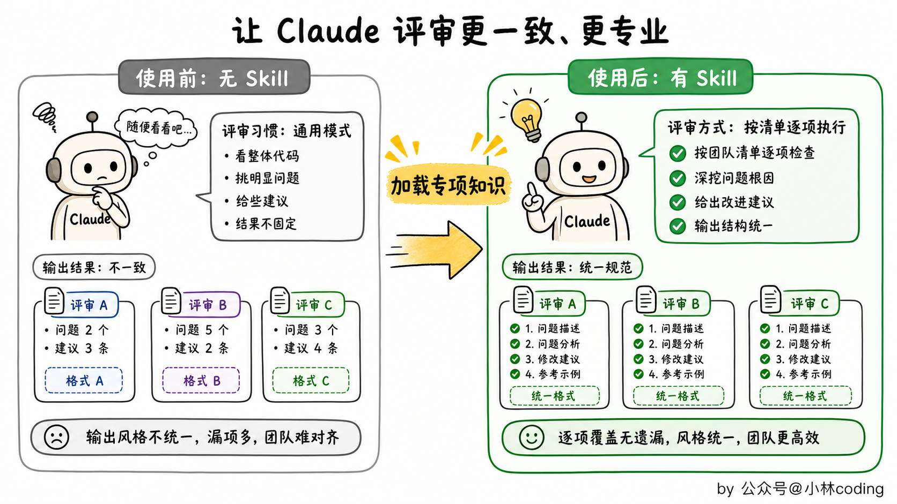
记忆的问题，到这算是解决得七七八八了。常用的进 CLAUDE.md，专项的做成 Skill。
但你真拿它干重活的时候，会撞上另一堵墙。
比如让它做一次全仓库的安全审查。它吭哧吭哧搜了几十个文件，读了一堆代码，每一次搜索结果、每一段文件内容，全都堆在你的主对话里。审查完了，你想接着聊点别的，发现它开始犯糊涂了，前面说过的话它记不清了。
上下文被垃圾信息灌满了。
03｜怎么让 Claude 变成一支小团队？
主对话为什么越聊越笨？
这个现象很多人都遇到过，会话用久了，Claude 明显变笨。
原因不玄乎。上下文窗口就那么大，你让它搜索文件、分析日志，这些动作产生的中间信息，搜到的每个文件路径、读过的每段代码、跑命令的每行输出，全都留在对话里。
真正有价值的可能就是最后那三行结论，但为了得出这三行，它往上下文里塞了几万字的过程垃圾。
窗口快满的时候，旧内容可能被裁剪、压缩或重新读取，新任务也会争用剩余预算。你写的 CLAUDE.md 规则可能在大量日志输出中变得不显眼，因此要控制工具结果与上下文规模。
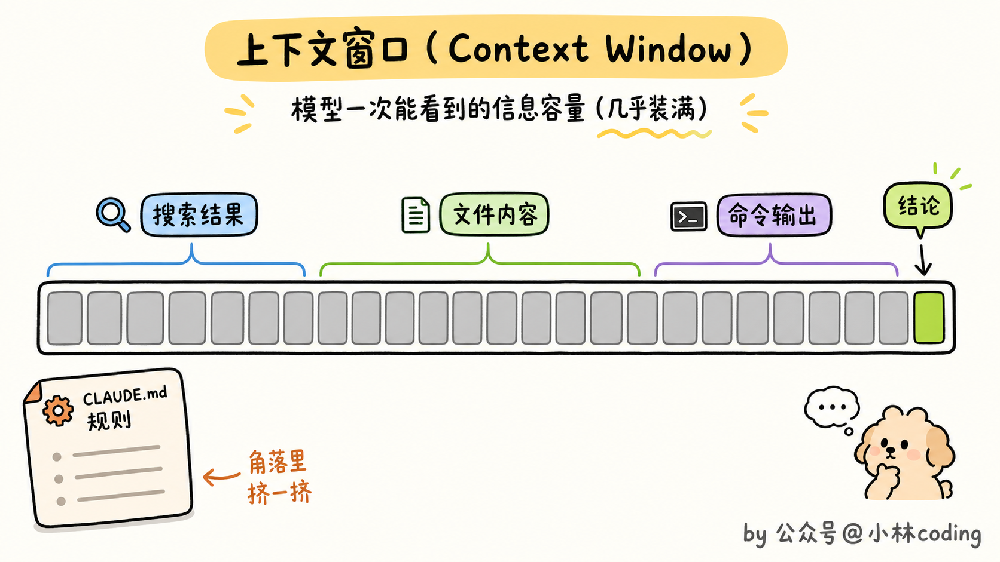
人类团队怎么解决这个问题？主管不会自己扎进日志里逐行翻，他会把活派给组员，「你去查一下昨晚的报错，查完给我个结论」。
组员翻了三小时日志，主管只收到一句「是缓存节点内存溢出，建议调大驱逐阈值」。过程留在组员那里，结论进入主管的脑子。
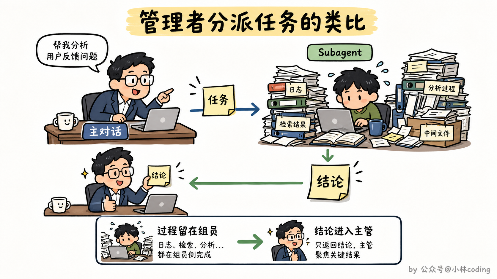
Subagent 干的就是组员这个角色。
主对话把任务派出去后，Subagent 通常使用独立的任务上下文；它的中间工具结果不会原样堆入主对话，但仍可能共享工作目录、配置、权限和外部副作用。完成后通常把结果或摘要交回主对话。
如果任务互不依赖，可以并行运行多个 Subagent；并行不保证效率翻倍，还会增加模型调用、资源竞争、合并冲突和协调成本。
Subagent 是怎么配出来的？
配置方式跟 Skill 一脉相承，也是放文件。项目的 .claude/agents/ 目录下，一个 markdown 文件就是一个 Subagent。
文件分两截。frontmatter 写元信息，名字、什么时候用、能用哪些工具、跑哪个模型。正文写它的系统提示，相当于给这个「组员」的岗位说明书。
frontmatter 里的 tools 字段可用于缩小 Subagent 可用工具集合。审查代码的 agent 可以只允许读文件和搜索，但这只是最小权限的一层；还要检查继承的权限、Hooks、MCP、工作目录、网络和共享副作用，不能称为天然安全。
model 等配置（若当前版本支持）可以把简单检索与深度分析分配给不同模型；成本和质量要按实际调用、上下文和失败重试测量。
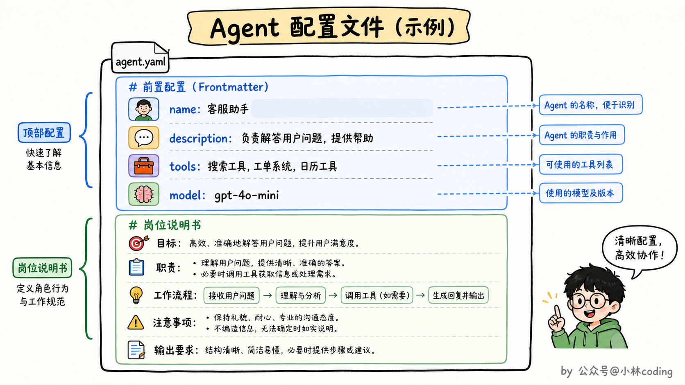
举个例子，一个 code-review 小分队成员的配置
---
name: code-reviewer
description: 代码改动的专项审查，检查安全、性能与规范
tools: Read, Grep, Glob
model: haiku
---
你是团队的代码审查员，只做审查不做修改。
逐个检查改动文件，重点看安全漏洞与性能隐患。
最终只输出问题列表与修改建议，不要贴大段代码原文。
注意最后一句，「只输出问题列表，不要贴大段代码原文」。这是控制上下文回传的实践；Subagent 能读取多少代码取决于上下文、工具和任务预算，结果也可能不完整，主 Agent 应复核关键结论。
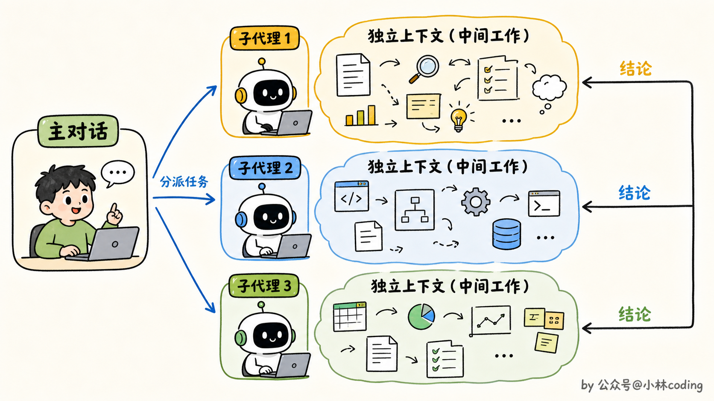
那是不是什么活都该拆出去？还真不是。
适合拆的是「过程重、结论轻」的任务，大范围搜索、日志分析、专项审查。反过来，你们正在反复讨论的方案就别拆，拆出去 Subagent 两眼一抹黑，还得重新交代半天，得不偿失。
这个度我也是拆错过几次才摸到的。有一次把一个改到一半的需求丢给 Subagent，它交回来的东西驴唇不对马嘴，从那以后我只往外派「查清楚一件事」这种边界干净的活。
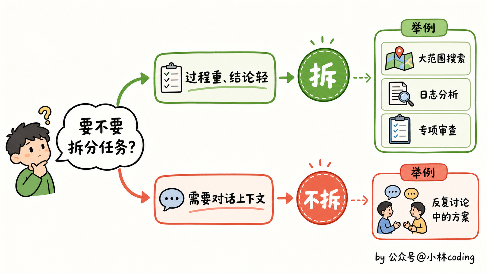
你的 Claude Code 现在有记忆、有专项知识、还带了一支小团队，像模像样了。
如果当前会话只启用了本地文件和终端工具，它通常不能直接访问 GitHub 等外部系统；能否访问取决于已配置的 MCP、CLI、网络和权限，而不是模型本身。
一个连 PR 都摸不到的审查员，清单写得再好也白搭。
04｜Claude 怎么够得着外部系统？
会「说」不会「做」是什么意思？
有个事情很有意思。你问 Claude 怎么用 GitHub 的接口拉 PR 列表，它能给你写出完整代码，参数、鉴权、分页全都对。
但你让它「直接帮我拉一下」，它做不到。
模型本身只生成调用意图；应用需要把可用工具、权限和执行结果接入循环。没有这些通道时，数据库、GitHub 或工单系统就不能被安全地操作。
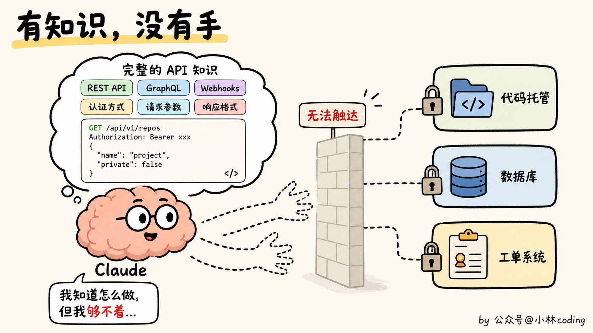
在统一协议普及前，工具集成通常需要针对不同应用或 SDK 适配；即使使用 MCP，工具语义、鉴权、错误处理和审批策略仍需要应用侧对接。
MCP（Model Context Protocol）是一种开放协议，用于标准化 AI 应用与外部上下文/工具服务器之间的发现、会话和调用边界。工具方实现 MCP Server 后，支持相同协议的 Host/Client 有机会复用接入，但仍需处理版本、能力协商、鉴权、权限和业务语义。
可以把它类比成接口规范，而不是“一根线走天下”：协议统一了消息与生命周期，不能自动统一所有工具的语义、权限和安全策略。
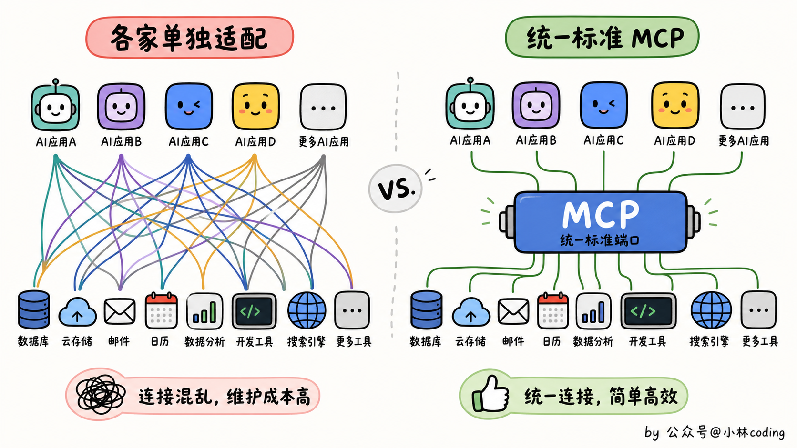
MCP 协议到底约定了什么？
从 MCP 的完整架构看，通常要区分 Host、Client 和 Server：Claude Code 作为应用 Host，可为每个 Server 连接创建 Client；工具提供方运行 Server。下面为了说明调用边界，重点看 Client 与 Server。
Server 可以声明 tools、resources、prompts 等能力；工具通常带名称、描述和输入 schema。schema 主要帮助发现和校验，不能代替服务端鉴权、参数校验和副作用控制。拿 GitHub 类 Server 来说，工具清单可能类似下面这样。
get_pull_request 读取某个 PR 的详情和改动
list_issues 按条件列出仓库的 issue
add_issue_comment 在 issue 或 PR 下发表评论
任务需要时，模型提出调用，Host/Client 还应执行权限、参数和审批检查，再转发给 Server；Server 返回结果或结构化错误，应用决定重试、修正、拒答还是继续循环。
Server 可以是本地进程，也可以是远程服务。stdio 适合本机进程间通信；远程连接通常使用 MCP 规范支持的 HTTP 传输，并按服务端实现处理会话、认证、重连和流式消息。不要把某个第三方服务或 URL 示例当作所有服务的官方接入方式。
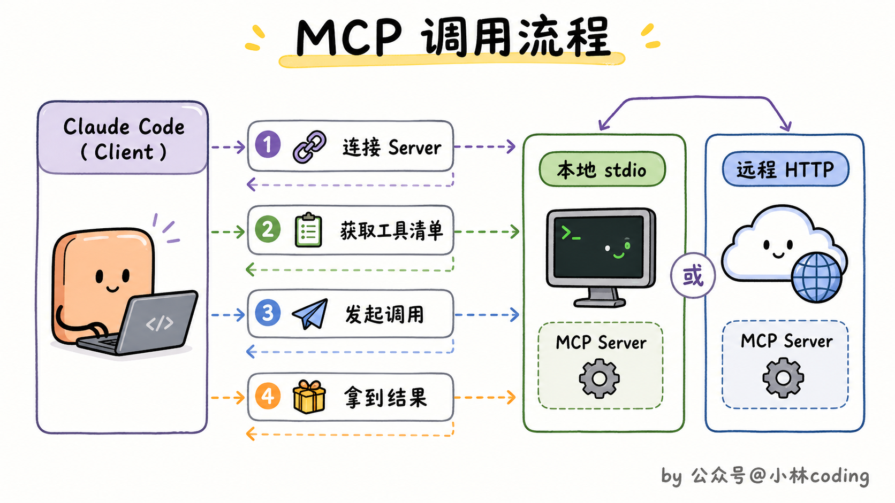
看到这估计有同学就问了，这不就是工具调用吗，跟 Skill 有什么区别？
它们关注的维度不同：Skill 主要提供可加载的指令、流程和参考资料；MCP 定义外部 Server 的发现与调用协议。Skill 可以指导模型何时调用 MCP，也可以指导普通 CLI 或内置工具；MCP 本身不替代业务授权。
实际用起来，这俩经常是配合着用的。比如 Skill 里写着「审查完把结果提交到工单系统」，这是流程。真到提交那一步，动手的是 MCP。
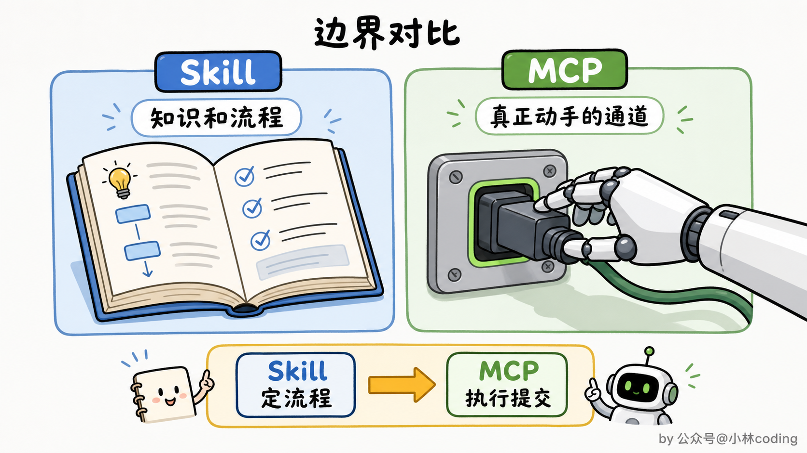
对了，还有一个边界问题值得一提。如果一个工具本来就有好用的命令行，比如 git、gh，Claude 直接在终端里敲命令就行，不一定非要 MCP。
MCP 的价值在于复用协议边界、能力发现、会话与远程服务接入；即便有现成命令行，也可能因权限、审计或跨环境需求选择 MCP，但没有固定的“必须使用”场景。
举个例子，接上 GitHub 之后能干什么
下面只是展示“远程 MCP + 认证头”的命令形态；Claude Code 命令、传输参数、服务 URL 和认证方式都应以当前版本与服务方文档为准。令牌应使用最小权限、环境变量或安全凭据存储，不要写入仓库或日志。
claude mcp add --transport http github https://api.githubcopilot.com/mcp/ \
--header "Authorization: Bearer 你的GitHub令牌"
连接并完成授权后，应用才可能发现并调用对应工具；具体可用操作和审批仍由 Server 与 Host 配置决定。
以前你说「看下某个 PR 改了什么」，在没有外部连接时它只能请求你提供内容；配置并授权后，它可以尝试调用读取工具，再结合 Skill 做审查。发表评论属于有外部副作用的操作，应单独确认仓库、权限、内容和审批，不应默认自动执行。
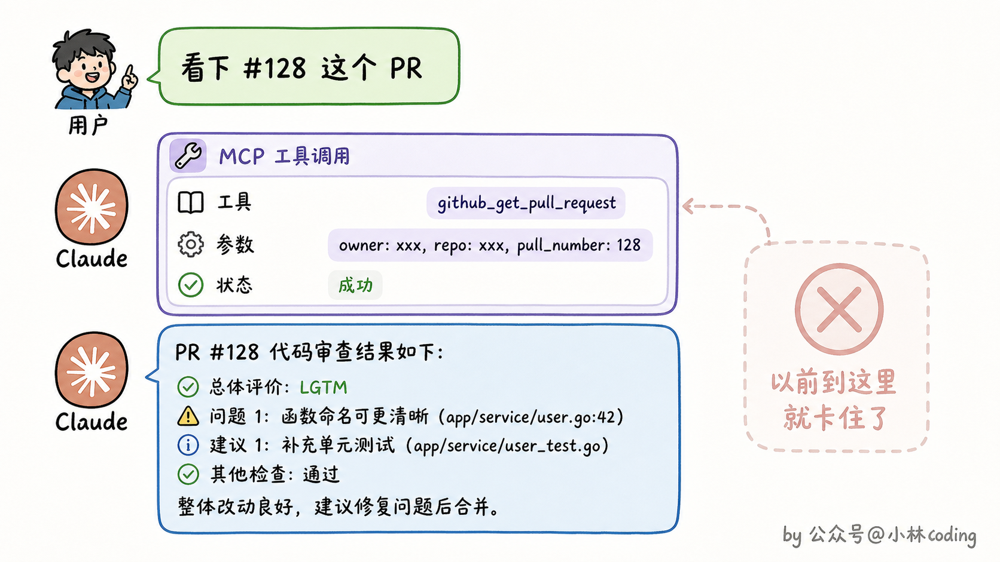
你看，链路这就通了。
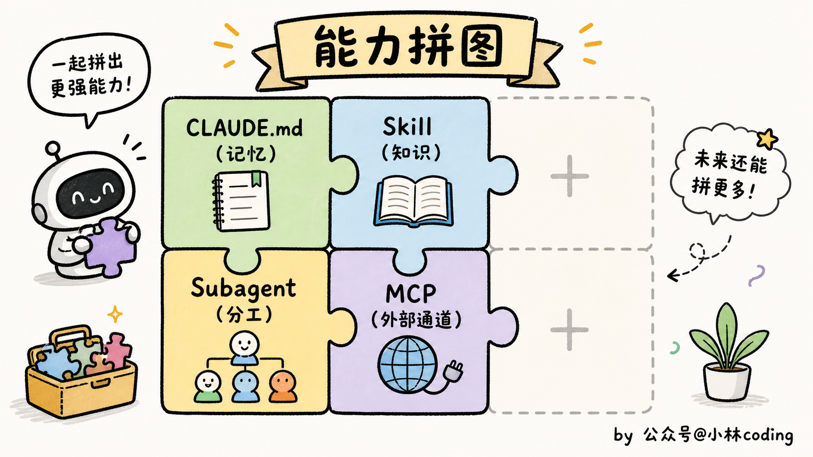
不过用得越深，你会发现一个更隐蔽的问题。
我在 CLAUDE.md 里写了「每次改完代码要跑一遍格式化」。模型可能遵守，也可能在长上下文、失败或工具不可用时漏掉；提示文本不能单独保证“必须”。
05｜规则怎么才能次次生效？
写在提示词里的规则，为什么会被无视？
怎么说呢，这个问题我想了挺久才想明白，想明白之后看很多事都顺了。
CLAUDE.md、Skill 以及任务提示中的大多数规则，最终都要由模型理解并执行。它们可以提高遵循概率，但不能替代程序化校验，也不能保证百分之百。
上下文变长、工具失败或任务复杂时，规则可能被忽略；遵循率应通过测试集、Hooks 和 CI 校验测量，而不是用固定比例描述。
对了，这跟开篇那个「失忆」不是一回事。那是规则压根没进会话，这回规则明明就摆在上下文里，它还是能漏。
说白了，提示词是建议，不是法律。你在员工手册里写「下班要锁门」，员工大部分时候记得，但总有忘的那天。真想万无一失，你装的是门禁系统，人走门自动锁，不依赖任何人的自觉。
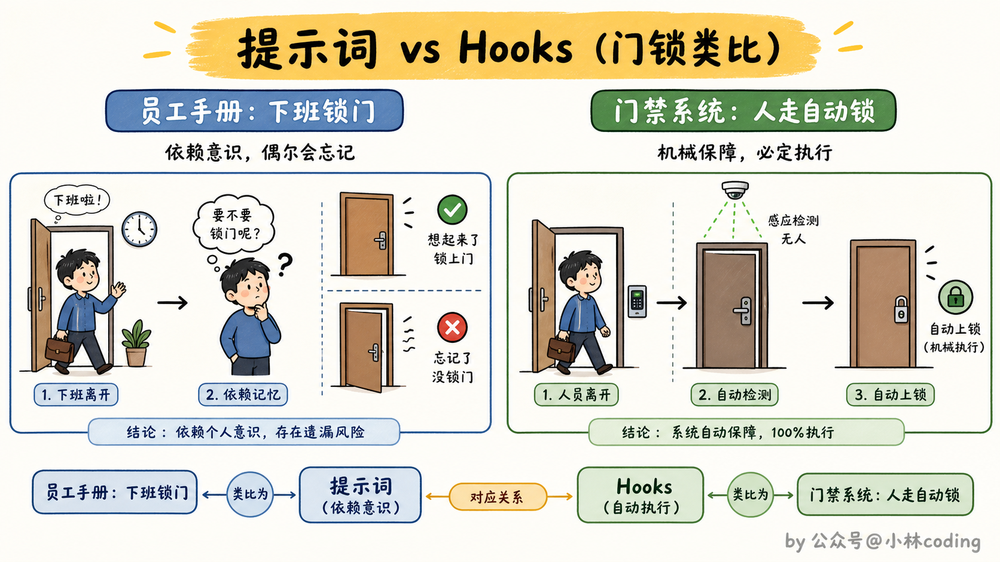
Hooks 是 Claude Code 提供的事件回调机制，可以把部分检查和自动化放到模型之外；它们是否能阻止某类操作，取决于事件、匹配器、退出码、配置和版本。
它允许在支持的生命周期事件上运行 shell 或其他命令。命令通常不依赖模型是否理解规则，但仍受配置、运行环境、命令失败、权限、用户审批和绕过路径影响，不能把 Hook 当作完整的安全边界。
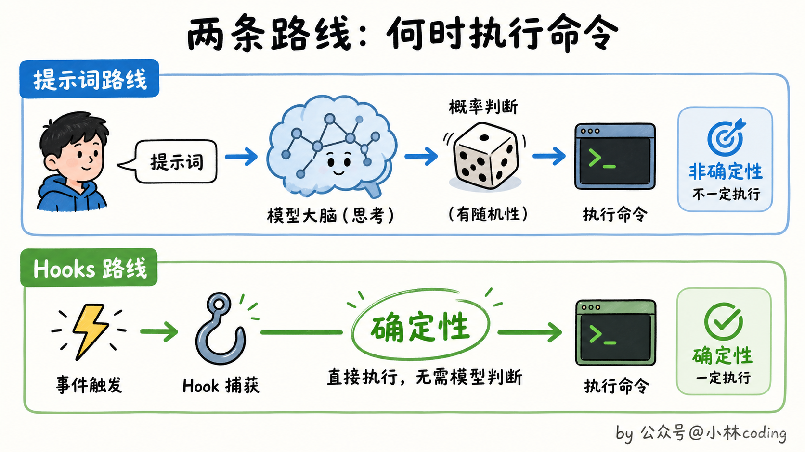
Hook 挂在哪些环节上？
Claude Code 支持一组生命周期事件，例如会话、提示词、工具调用前后和响应完成等；事件名称、输入 payload 和可拦截语义会随版本变化，应按当前文档配置。
常见用法是工具调用前后检查：前置 Hook 可在支持的事件上做策略判断，后置 Hook 可触发格式化或测试。前置/后置不等于事务回滚；格式化、测试和外部副作用失败时要有清晰的错误处理。
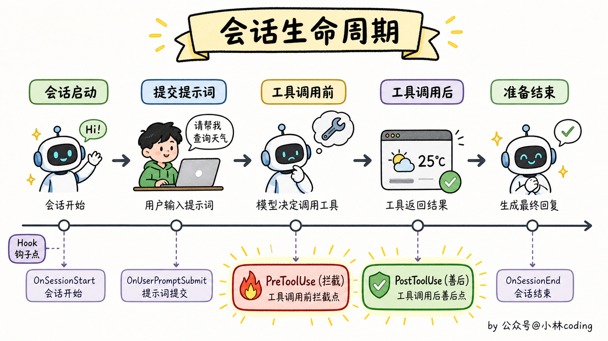
配置通常写在 settings.json 或产品支持的配置位置；matcher 可用于筛选事件或工具，command 指定要执行的命令。字段、事件名和匹配语义应按版本文档核对。
命令的退出码和 stderr 处理有版本约定；在支持的前置工具事件中，特定退出码可以阻止调用并把原因反馈给模型，其他非零退出也可能被记录或标记失败。不要只凭示例假设所有事件都可拦截。
说人话就是，门禁不光能拦人，还能告诉他为什么被拦、该走哪个门。
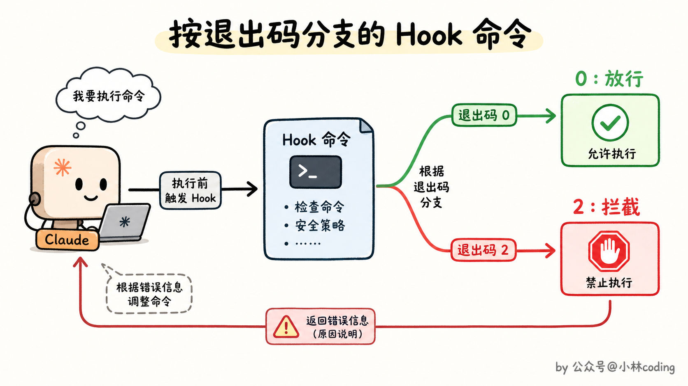
举个例子，自动格式化和敏感文件保护
善后型的最常用，比如改完文件自动格式化。
"hooks": {
"PostToolUse": [{
"matcher": "Edit|Write",
"hooks": [{ "type": "command",
"command": "jq -r '.tool_input.file_path' | xargs npx prettier --write" }]
}]
}
拆开看很好懂。PostToolUse 是挂载点，工具调用之后触发。matcher 筛出「编辑或写入文件」这类操作。command 里 jq 用于读取事件 payload 中的路径；生产配置还应正确处理空格、特殊字符、路径白名单、跨平台 shell 差异和格式化失败，避免把未校验输入直接拼接进命令。
此后匹配到的文件会尝试触发 prettier；是否执行成功取决于 matcher、环境、路径类型和命令退出状态，不能把后置 Hook 当作成功保证。
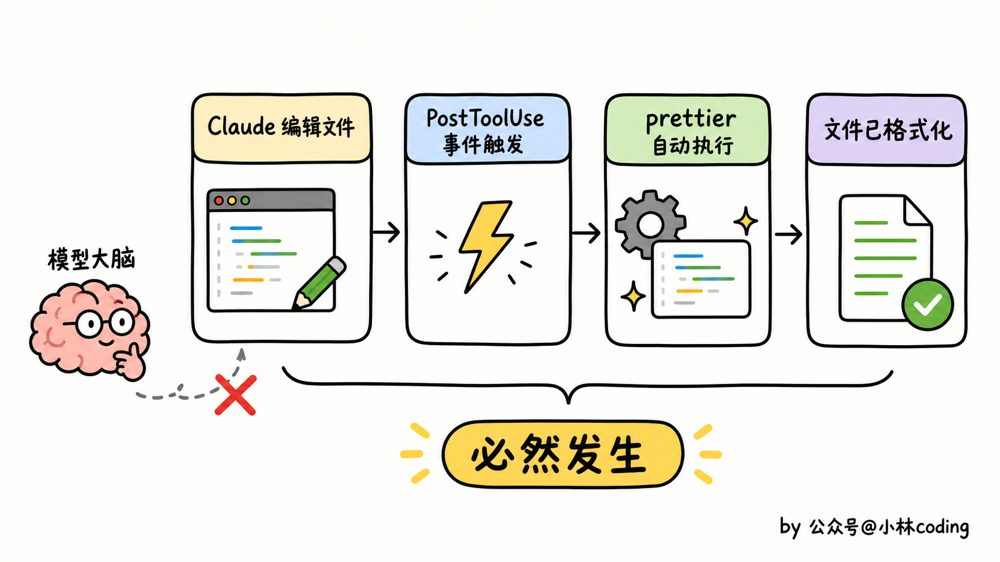
格式化是让它多做事，还有一类正相反，是不许它做的事，比如动敏感文件。这次把 Hook 挂在工具调用之前。
"PreToolUse": [{
"matcher": "Edit|Write",
"hooks": [{ "type": "command",
"command": "~/.claude/hooks/protect.sh" }]
}]
protect.sh 里就几行 shell；示例还应补充路径规范化、符号链接、平台差异和绕过测试。
#!/bin/bash
file=$(jq -r '.tool_input.file_path')
if [[ "$file" == *".env"* || "$file" == *"secret"* ]]; then
echo "敏感文件禁止修改" >&2
exit 2
fi
逻辑一眼就能看明白。取出这次要动的文件路径，发现命中 .env 或者密钥文件，就带着报错信息用退出码 2 退出。
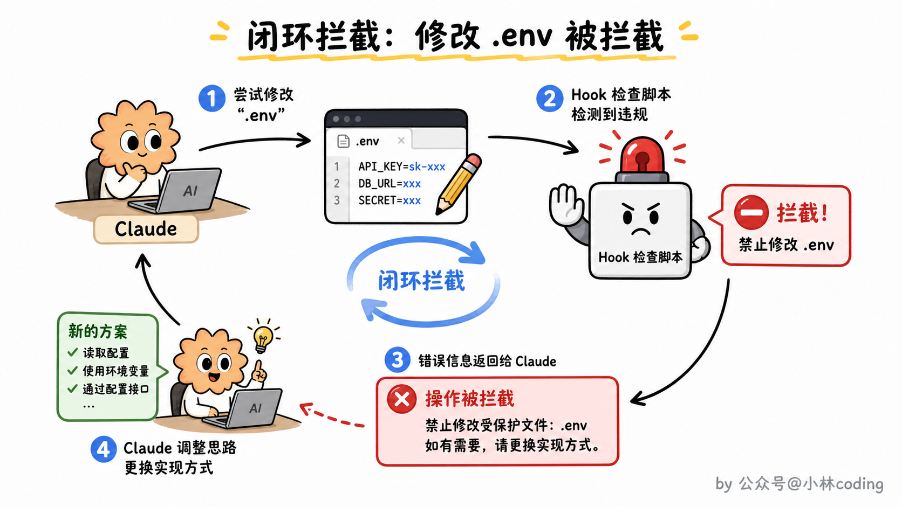
效果很有意思，Claude 的操作被摁住，它收到报错信息「敏感文件禁止修改」，然后它会跟你说，这个文件被保护了，我换个方案。整个过程你一个字都不用说。
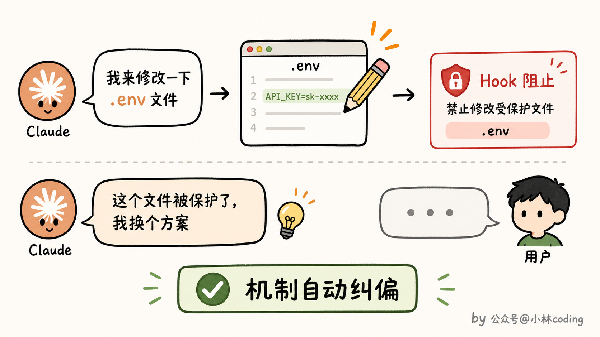
到这里，六件套就差最后一块拼图了。你手上这套 Claude Code，有记忆、有知识库、有团队、有外部通道、还有铁的纪律。
然后现实问题来了。这一摊配置，CLAUDE.md、几个 Skill、几个 Subagent、MCP 接入和一串 Hooks，全都散落在这个项目的各个角落。
下周你开新项目，全得手动搬一遍。同事看你用得好想抄作业，你只能把文件一个个发给他。过两个月你更新了审查清单，他那份还是旧的。
06｜这套配置怎么打包带走？
换个项目就要重配一遍？
配置多了之后，分发就成了真问题。
手动复制的毛病，干过的都懂，容易漏、版本乱。你自己的三个项目里躺着三个版本的 code-review Skill，哪个是最新的，你自己都说不清。团队里更麻烦，每个人抄作业的时间点不一样，手上的配置千差万别，出了问题都没法对齐。
这个问题在软件行业早就被解决过一次了，答案叫包管理。没有人会靠拷贝文件夹来分发依赖库，大家发布一个包，别人一条命令安装，更新了再拉一次就行。
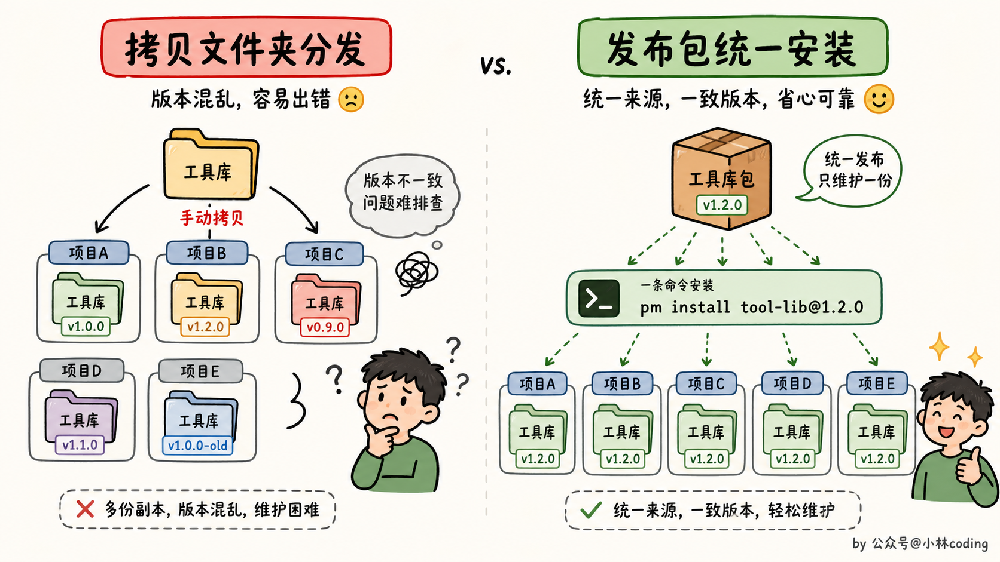
Plugin 可以把 Claude Code 的多种扩展点打包和分发，作用接近配置/扩展包，而不只是“模型能力升级”。
它通常不改变基础模型本身，但可以通过其中包含的 Skills、Subagents、Hooks、MCP 配置或命令扩展改变 Claude Code 的可用工具与流程。安装、更新和启用行为取决于版本、插件清单和组织策略，不能默认自动同步。
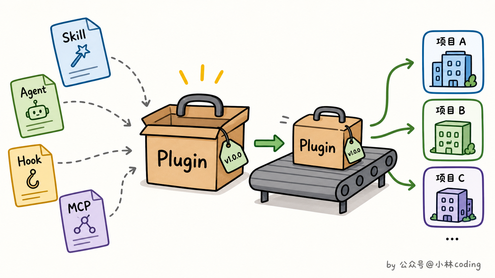
Plugin 里面装了什么？
一个 Plugin 通常是带清单和约定目录的扩展包；清单字段与可包含的组件应以当前插件规范为准。
my-review-kit/
├── .claude-plugin/plugin.json # 名字、版本、描述
├── skills/ # Skill 们
├── agents/ # Subagent 们
├── hooks/ # Hook 配置
└── .mcp.json # MCP 接入配置
plugin.json 是身份证，写清楚名字和版本。剩下几个目录，就是把前面几章那些散装配置按类别归位。你会发现没有任何新概念，Plugin 纯粹是个收纳盒。
分发可以通过 marketplace 或团队维护的源；源的类型、信任策略和安装命令由产品版本决定。团队应审查插件代码、Hook、MCP 配置、依赖、网络访问和更新来源。
/plugin marketplace add your-team/claude-plugins
登记后，客户端可能展示源中的插件供选择；可见性、版本解析和安装权限仍受配置与组织策略控制。
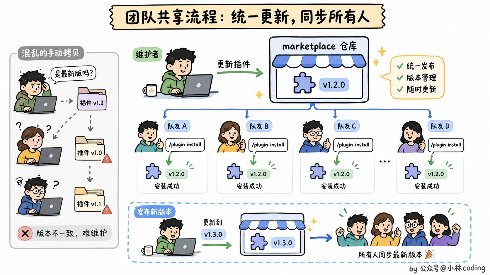
举个例子，把前面这些配置装进一个 Plugin
咱们一路走下来，手上已经有这么几样东西了。审查清单 Skill、code-reviewer Subagent、格式化和敏感文件的 Hooks、GitHub 的 MCP 接入。
我把它们按上面的结构归好位，起名 my-review-kit，推到团队的 marketplace 仓库。同事那边就一条命令的事。
/plugin install my-review-kit@team-marketplace
装完后，他的 Claude Code 可能获得这套审查扩展；是否与本地模型、权限、工具版本和环境一致，需要通过测试与锁定版本验证。更新清单也需要发布新版本并按策略升级，不应默认自动同步。
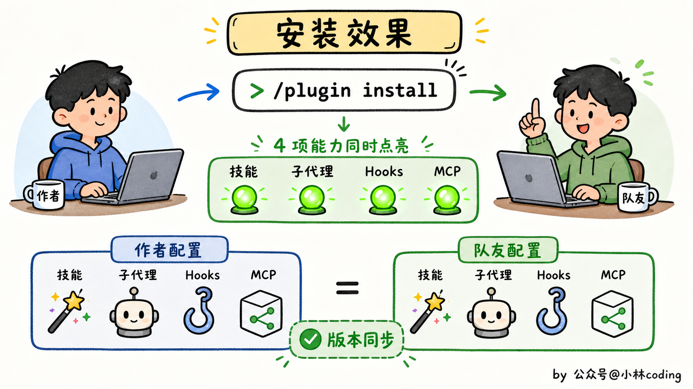
开篇那个「每天失忆的新同事」，到这里已经变成一个带着完整工装、可以批量复制的老师傅。
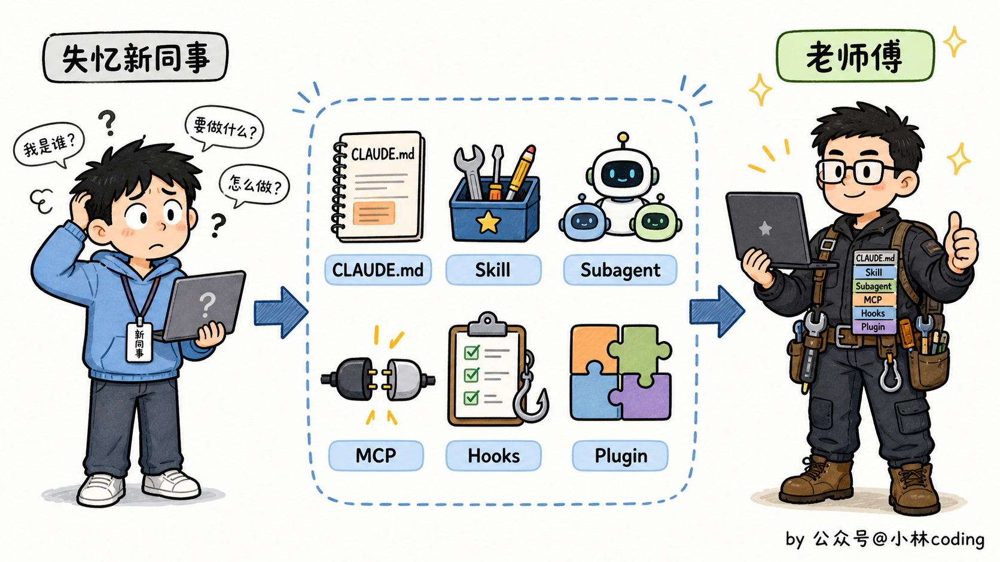
不过有一说一，安全这根弦得绷着。
装别人的 Plugin，跟把来路不明的 U 盘插进公司电脑是一个性质的事。里面的 Hook 能在你机器上执行任意命令，MCP 配置能连外部服务。装之前看看来源，团队内部或者靠谱的开源项目再装，野生插件别乱插。
07｜六件套怎么配合打一套完整的？
最后咱们把镜头拉远，看一次完整的配合。
场景就用团队里最日常的，一次代码审查加修改。
会话一开，项目指令可能按版本规则从 CLAUDE.md 等位置加载；这是指导文本，不代表所有规则都被强制执行。
然后你敲了一句「审一下今天这个 PR」。
就这一句话，后面其实发生了不少事。MCP 先把 PR 的改动从 GitHub 拉下来。审查的活呢，不在主对话里干，派给了 code-reviewer Subagent。这个 Subagent 手里还拿着 code-review Skill 里那份团队清单，在自己的上下文里逐个文件过。
那你在主对话里看到的是什么？就一份干干净净的审查结论。搜了多少文件、读了多少代码，你全程不用看。
假设审出三个问题，Claude 接着动手修。这时候 Hook 开始上班了，改一个文件就跟着跑一遍格式化，没人提醒它，也不靠它自觉。中途它想顺手动一下配置文件里的密钥，被拦截 Hook 摁住了。
修完后，若用户确认且权限允许，才通过 MCP 评论回 PR；写操作应有审批、审计和失败回滚/补偿路径。
还有一个细节，我觉得最有意思。上面这一整套配置可以从团队 marketplace 安装，但每个人的模型、权限、环境变量和本地设置仍可能不同，不能假定“一字不差”。
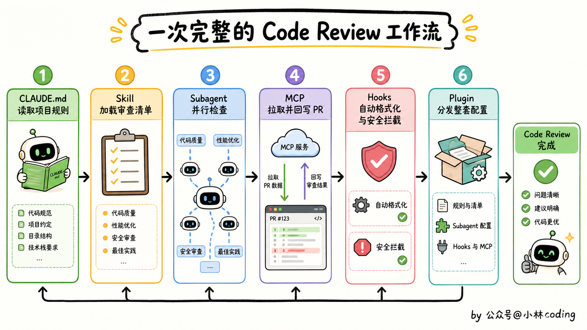
一条流程走完，每个能力各干各的活，少一样都别扭。
最后送一张速查表，以后遇到具体问题，先对号入座再动手。
| 你遇到的问题 | 该用的能力 |
|---|---|
| 每次会话都要重新交代项目背景 | CLAUDE.md |
| 专项知识和流程，用时才需要 | Skills |
| 中间过程太多，主对话被污染 | Subagents |
| 需要访问 GitHub、数据库等外部系统 | MCP |
| 规则需要程序化检查或阻断 | Hooks、CI 或外部策略 |
| 配置要跨项目复用、团队共享 | Plugins |
最后
写完这篇，我自己有个挺深的感触。
大家聊 AI 编程，十句里有八句在聊模型，哪家又发新版了，跑分又涨了多少。这些我也天天刷。但讲真，真正拉开使用效果差距的，往往压根不在模型。
你想想，同一个 Claude Code，有人用出来是个每天失忆的实习生。也有人用出来，是一支带着知识库、纪律和外部系统权限的工程团队。
差在哪？模型是同一个模型，差的就是这套脚手架。
模型决定它「能」做到什么。能不能「稳定」做到，看你搭的架子。
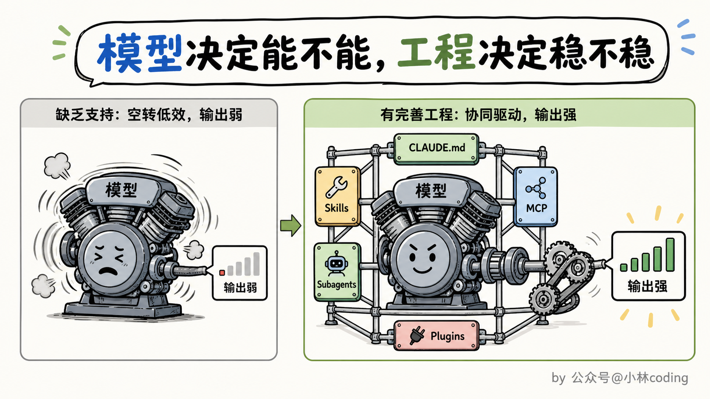
而且你发现没有，这六件套背后的思路全都不新鲜。入职手册、翻书查资料、团队分工、标准接口、门禁系统、包管理，全是软件工程和团队管理里玩了几十年的老经验。
AI 变强了，但让 AI 好好干活的方法，还是那些让人好好干活的方法。
所以别光盯着模型跑分了，回去把脚手架搭起来。工具明年可能又换一茬，这个思路丢不了。